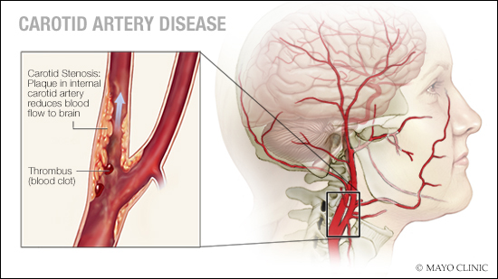

Physiological Issue
Atherosclerosis can be characterized as the buildup of plaque on the artery walls. Plaques consists of clumps of cholesterol, calcium, fibrous tissue and other cellular debris that build-up at microscopic injury sites within the artery. This plaque buildup can typically be attributed to a high cholesterol diet or other risk factors such as high blood pressure, diabetes, family history of stroke, and age. If a piece of plaque breaks off and flows into smaller arteries that lead to the brain, blood flow to the brain will be obstructed and a stroke can occur.

Unmet Need
There are currently no small-scale screening devicesfor atherosclerosis that can be used by a Primary Care Physician during a typical doctors visit. Although the Doppler Ultrasound can be used to detect severity of atherosclerosis, it is a very expensize test, therefore, patients are usually only referred to this test if they have high risk factors.This puts two groups at risk: first, those who do not have high risk factors but might develop atherosclerosis over time would not be screened. Second, patients from a lower socioeconomic background may forgo the screening due to high costs. Both of these groups are susceptible to a life-threatening strokes that could be preventable with proper screening.
Problem Statement
Our objective was to create a low-cost, reliable sound recording device able to detect frequencies characteristic of arterial blockage to determine if there is an increased risk of stroke.
Concept Developement
Because our goal was to create a device able to detect blood flow turbulence in the carotid artery, we chose to create a solution focused around the use of a contact microphone. Contact microphones can be pressed directly against the skin to obtain signals from the body (such as the heart beat signal) and can block out all background noise.Therefore, the contact microphone was a crucial element of our device that was able to be pressed against the carotid artery to detect blood turbulence from plaque buildup. There were three aspects of concept development: 1. Characterizing turbulence within the audio signal 2. User interface with the sound-recording device (a contact mic) and 3. How the device was applied by the user onto the patient with a consistent pressure that would not obstruct blood flow.
Characterizing Turbulence within the Audio Signal
In order to determine whether the contact microphone was able to pick up an audio signal from the carotid artery and also detect turbulence, we performed several tests on the brachial artery of a healthy patient wearing a blood pressure cuff to detect if turbulence was detected at a cuff pressure above diastolic blood pressure (70 mmHg for the patient). We recorded the heart beat signal with the contact mic at cuff pressures below diastolic, above diastolic, and above systolic. Heart beat signals were obtained from all three categories of pressure levels, however, as seen in the image below, it was found that at a cuff pressure above diastolic and below systolic blood turbulence is detected and represented as a voltage spike within the heartbeat signal (the trough). At cuff pressures below diastolic or above systolic, no turbulence is seen because the blood has either no obstruction (laminar flow) or complete obstruction (no flow),respectively. This testing validates that the contact microphone is able to detect turbulence as a result of osbtruction of the carotid artery.
.png)
User Interface
Three different models were obtained or prototyped for how the user would hold the device with ease and stability. An ergonomics questionnaire survey was used to determine the most comfortable and intuitive holding mechanism.
.png)
Cross-Trial Pressure Consistency
Four different models were prototyped and the mean pressures exerted for each design were measured. Pressure exerted had to be less than 70 mm Hg, or diastolic blood pressure, to be considered for use. The four models were then compared via an Ergonomics Survey, and the most intuituve and comfortable device (for user and patient) was chosen.
.png)
.png)
Final Concept
The gripper model and the pressure applicator model that were most favored in the Ergonomics Surveys were chosen to be utilized for our final design.
.png)
.png)
.png)